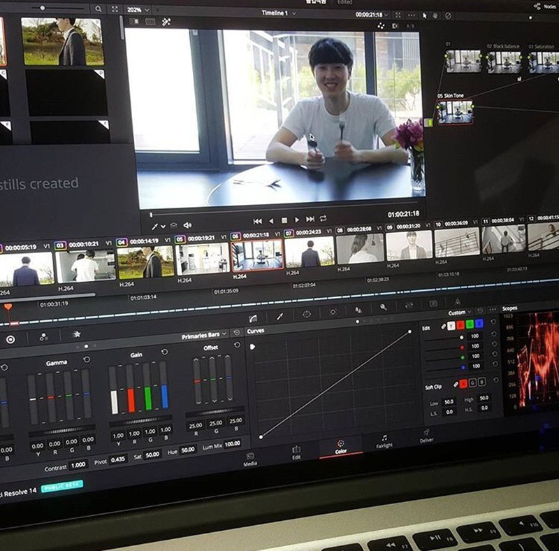
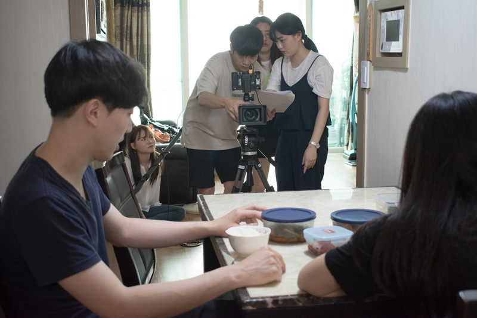
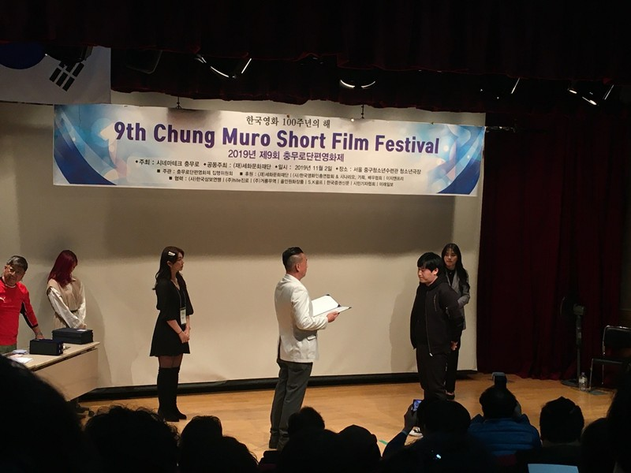
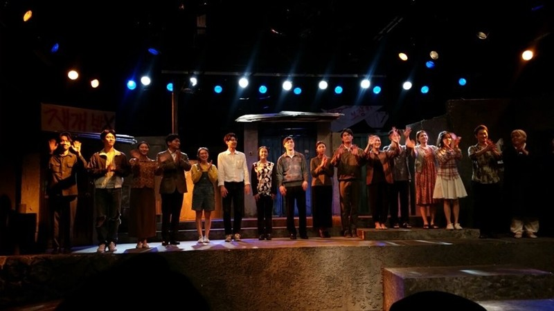
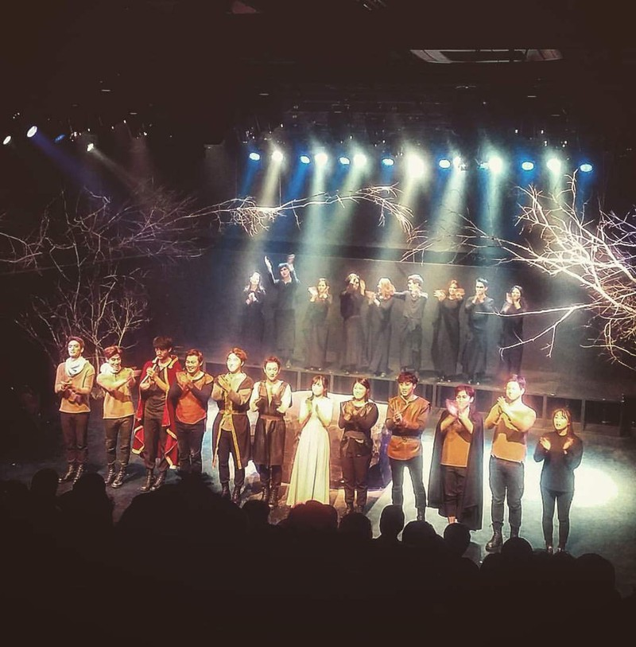
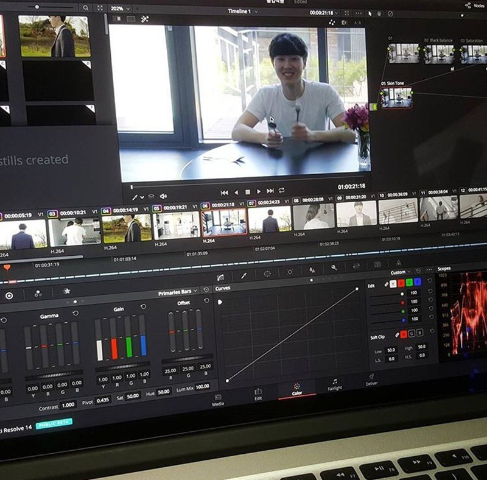
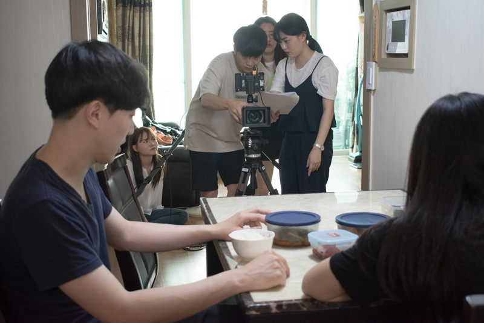
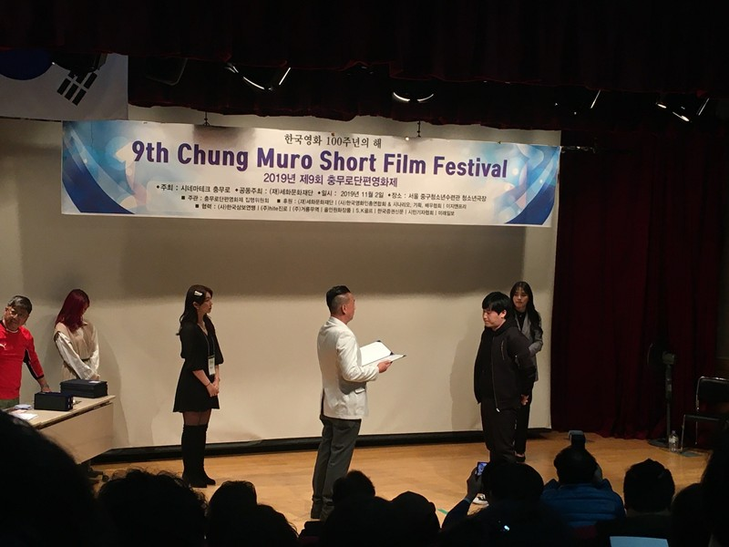
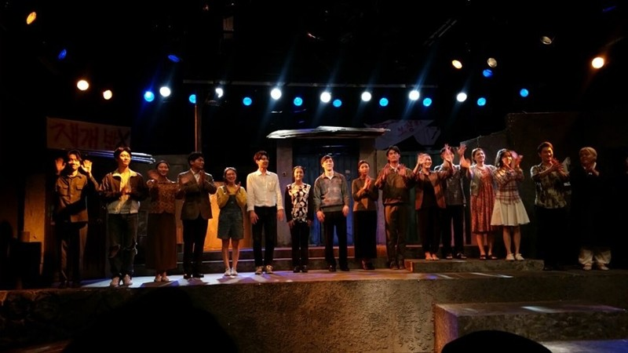
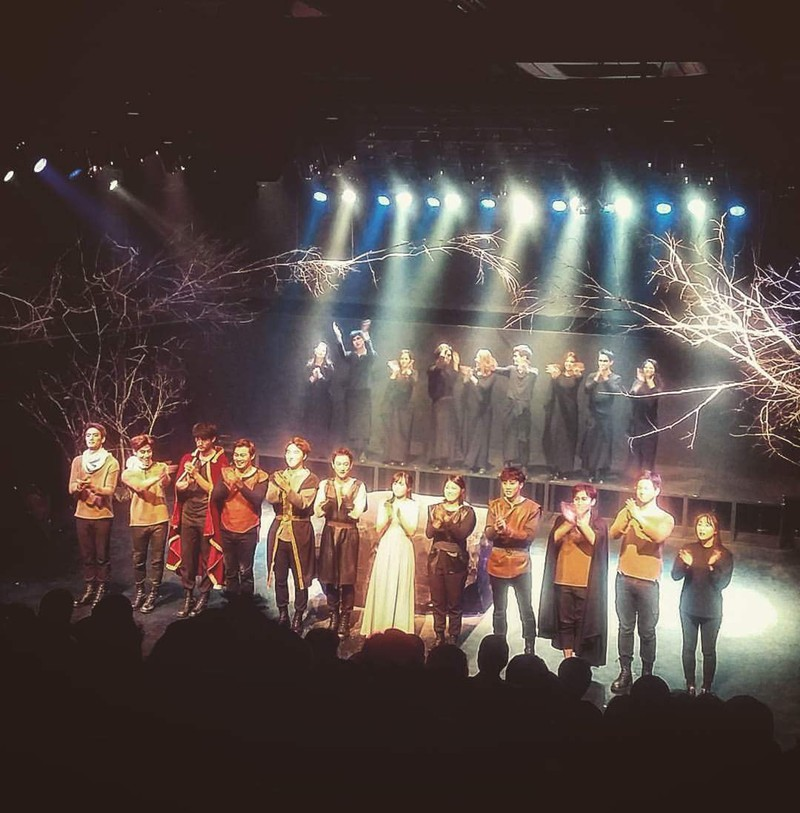

박태진 강사


 











스피치 및 교육 경력
세종대학교 영화예술학과 연기예술전공 합격 (실기,면접) (200:1) ‘11
국립전통예술고등학교 뮤지컬과 합격 (실기,면접) (10:1) ‘06
세종대학교 영화제 MC '11
세종대학교 영화예술학과 총무부장 : 300명 앞 계획, 결산 보고 및 질의응답 (PT) ‘14~’16
세종대학교 영화예술학과 연기예술전공 입시 진행 : 2000명 앞 입시 설명 및 질의응답 ‘11~’16
세종대학교 영화예술학과 과대표, 무대감독 (어느 계단 이야기) : 공지, 진행 (PT) ‘14~’17
세종대학교 영화예술학과 11학번 졸업식 답사 ‘18
blackgroup 연기스터디장 17~
기업 출강 : **산업, **코리아, ****컨설팅, 헬스*(강남1위) 필라*(강남1위), 스켈** 등 19~
학교 출강 : 경상대, 인제대, 경기상고 '22~
학원 출강 : *******논술, **스쿨스토리, 송송******, 왕박사*****, 컬*, 유즈플 등 '21~
기업 헬스***(강남1위) 계약 체결 (PT) '22
기업 필라*(강남1위) 계약 체결 (PT) '22
결혼식 축사 다수 '22
개인,그룹 연기,스피치 레슨 다수 (아역, 고등학생, 대학생, 배우, 모델등) '15~
배우 및 연출 포트폴리오
[ Movie ]
2024 장편 ‘늦더위‘ <주조연> (부산국제영화제/서울독립영화제 경쟁)
2022 장편 '피는 물보다 진하다' <주연>
2022 단편 '먹이' <주연> / '히든' / '그렇기에 나는 배우입니다' <주연>
2020 상업 '초미의 관심사' <단역> / '자기결정권' <주연>
2019 단편 'The Faker' <주연> / 2018 상업 '안시성' / '여름방학'
[ Drama ]
2020 웹드라마 '성유동' <조연> / 2019 JTBC '리갈하이' <단역>
2018 채널A '열두밤' / OCN '손 the guest' / 넷플릭스 '마음의소리 리부트'
2017 네이버TV '러브스틱', '수스' <주연>
[ Play / CF / Etc ]
2021 연극 '순례주택' / '우리들의 이야기' <연출>
2016 연극 '우리읍내' / '어느계단이야기' <주연>
2014-15 연극 '쉬어매드니스', '맥베스', '한여름밤의 꿈'
2017-19 삼성전자 SNS 활용가이드 / 우리은행 위비톡 바이럴